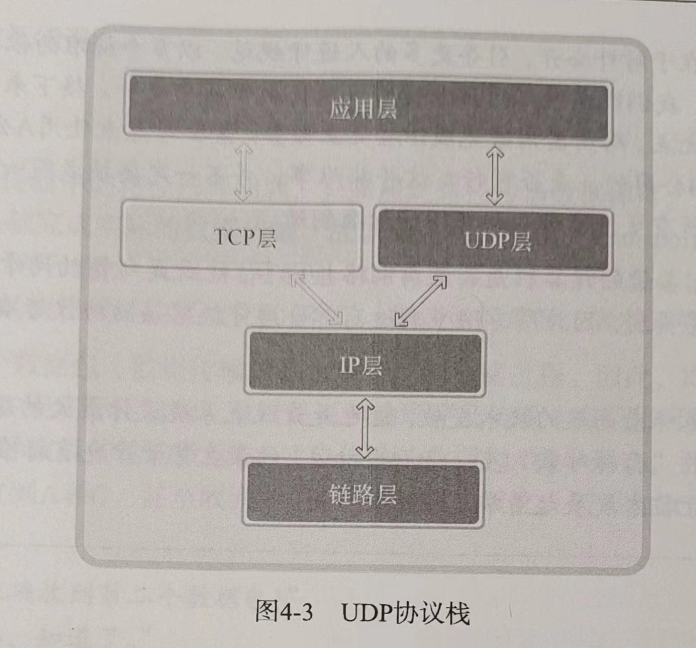

第一部分 开始网络编程
1. 理解网络编程和套接字
1.1 理解网络编程和套接字
c 语言的 print 和 scanf 进行控制台输入输出,控制台 IO 和文件 IO 很类似,而网络编程和文件 IO 也有很多相似之处
网络编程和套接字概要
网络编程就是编写程序使两台连网的计算机相互交换数据.两台计算机首先有物理连接,如今大多数计算机都连接到了互联网,在此基础上,编写数据传输软件.而操作系统提供了名叫”套接字”socket 的部件.套接字是网络数据传输用的软件设备,所以网络编程也叫套接字编程.我们把插头插到插座上就能有电,类似的,我们用”套接字”来连接网络,socket 本身就有”连接”的含义,可以引申用来代表两台计算机之间的网络连接
构建接电话套接字
套接字大致分两种,tcp 套接字类似电话机(电话机也是通过固定电话网完成语音数据交换的).
电话可以同时拨打和接听,但是套接字的拨打和接听是有区别的.
用于接听的套接字的创建过程
准备电话机
#include <sys/socket.h>
// 成功时返回文件描述符,失败返回-1
int socket(int domain, int protocol);
电话机创建了,分配号码和安装不需要我们完成,我们只需要安装套接字
调用 bind 函数(分配电话号码)分配套接字的地址信息(ip 地址+端口号)
#include <sys/socket.h>
// 成功时返回0,失败返回-1
int bind(int sockfd, struct sockaddr *myaddr, socklen_t addrlen);
调用 listen 函数(连接电话线)将套接字转换为可接收连接的状态
#include <sys/socket.h>
// 成功时返回0,失败返回-1
int listen(int sockfd, int backlog);
调用 accept 函数(拿起话筒),让套接字接收对方的连接,进行处理
#include <sys/socket.h>
// 成功时返回文件描述符,失败返回-1
int accept(int sockfd, struct sockaddr *addr, socklen_t *addrlen);
网络编程中接受连接请求的套接字创建过程:
- 调用 socket 函数创建套接字
- 调用 bind 函数分配 IP 地址和端口号
- 调用 listen 函数转为可接收请求状态
- 调用 accept 函数受理连接请求
编写”hello world”服务器端
服务器端(server)是能够受理连接请求的程序.我们写一个服务器端,收到连接请求后向请求者返回”hello world”答复
// hello_server.c
#include <stdio.h>
#include <string.h>
#include <stdlib.h>
#include <unistd.h>
#include <arpa/inet.h>
#include <sys/socket.h>
void error_handling(char *message);
int main(int argc, char *argv[])
{
int serv_sock; // 服务端套接字
int clnt_sock; // 客户端套接字
struct sockaddr_in serv_addr; // 服务端地址
struct sockaddr_in clnt_addr; // 客户端地址
socklen_t clnt_addr_size; // 客户端地址长度
char message[] = "Hello, world!";
if (argc != 2)
{
printf("Usage : %s <port>\n", argv[0]);
exit(1);
}
// 1.调用socket函数创建套接字
serv_sock = socket(PF_INET, SOCK_STREAM, 0);
if (serv_sock == -1)
error_handling("socket() error");
memset(&serv_addr, 0, sizeof(serv_addr));
serv_addr.sin_family = AF_INET; // 协议簇
serv_addr.sin_addr.s_addr = htonl(INADDR_ANY); // 大小端地址
serv_addr.sin_port = htons(atoi(argv[1])); // 端口
// 2.调用bind绑定ip和端口
if (bind(serv_sock, (struct sockaddr *)&serv_addr, sizeof(serv_addr)) == -1)
error_handling("bind() error");
// 3.调用listen转为可接收状态
if (listen(serv_sock, 5) == -1)
error_handling("listen() error");
clnt_addr_size = sizeof(clnt_addr);
// 4.调用accept受理连接请求
clnt_sock = accept(serv_sock, (struct sockaddr *)&clnt_addr, &clnt_addr_size);
if (clnt_sock == -1)
error_handling("accept() error");
// 回写数据
write(clnt_sock, message, sizeof(message));
close(clnt_sock);
close(serv_sock);
return 0;
}
void error_handling(char *message)
{
fputs(message, stderr);
fputc('\n', stderr);
exit(1);
}
构建打电话套接字
服务端创建的套接字是服务端套接字,又叫监听(listening)套接字
接下来介绍用于请求连接的客户端套接字
#include <sys/socket.h>
// 成功返回0,失败返回-1
int connect(int sockfd, struct sockaddr *serv_addr, socklen_t addrlen);
客户端程序只需要 1,调用 socket 函数创建套接字;2,调用 connect 函数向服务器端发送连接请求
// hello_client.c
#include <sys/socket.h>
#include <stdio.h>
#include <stdlib.h>
#include <string.h>
#include <unistd.h>
#include <arpa/inet.h>
void error_handling(char *message);
int main(int argc, char *argv[])
{
int sock;
struct sockaddr_in serv_addr;
char message[30];
int str_len;
if (argc != 3)
{
printf("Usage: %s <IP> <port>\n", argv[0]);
exit(1);
}
// 创建套接字,但不马上分为客户端和服务器端,
// 调用bind、listen函数的是服务器端,调用connect的是客户端
sock = socket(PF_INET, SOCK_STREAM, 0);
if (sock == -1)
error_handling("socket() error");
memset(&serv_addr, 0, sizeof(serv_addr));
serv_addr.sin_family = AF_INET;
serv_addr.sin_addr.s_addr = inet_addr(argv[1]);
serv_addr.sin_port = htons(atoi(argv[2]));
if (connect(sock, (struct sockaddr *)&serv_addr, sizeof(serv_addr)) == -1)
error_handling("connect() error");
str_len = read(sock, message, sizeof(message) - 1);
if (str_len == -1)
error_handling("read() error");
printf("Message from server: %s\n", message);
close(sock);
return 0;
}
void error_handling(char *message)
{
fputs(message, stderr);
fputc('\n', stderr);
exit(1);
}
在 linux 平台下运行
编译
gcc hello_server.c -o hserver
gcc hello_client.c -o hclient
1.2 基于 linux 的文件操作
对 linux 而言,socket 操作和文件操作是一样的,socket 也被认为是文件的一种,数据传输过程中可以使用文件 IO 相关函数,而 windows 需要调用特殊的数据传输相关函数
底层文件访问(Low-Level File Access)和文件描述符(File Descriptor)
这里的底层是指的是”与标准无关的操作系统独立提供的”,稍后讲解的函数是由 linux 提供的,而非 ANSI 标准定义的函数,要使用 linux 提供的文件 IO 函数,需要先理解文件描述符的概念
文件和套接字一般经过创建过程才会被分配文件描述符.上表中的 3 中输入输出对象即时未经过特殊的创建过程也会在程序允许后自动分配文件描述符
文件描述符(文件句柄): 学校附近有个服务站,打个电话就能复印需要的论文,而有一个常客叫英秀,每次都复印同一篇,时间长了,每次都要说论文全名非常繁琐,于是与电话站约定用 18 号来代表该论文,每次如果复引的论文标题超过 50 个字,就会约定一个新的不重复的号码来表示该论文.这里的号码就是文件描述符,论文对应文件,每当生成文件或套接字,操作系统将返回分配给它们的整数.在 linux 下称为描述符,windows 下称为句柄
打开文件
该函数需要两个参数: 1.打开的目标文件名及路径信息;2.文件打开模式(文件特性信息)
#include <sys/types.h>
#include <sys/stat.h>
#include <fcntl.h>
// 成功返回文件描述符,失败返回-1
int open(const char *path, int flags);
参数 2(可以用 | 符号一次传递多个)可能取值:
关闭文件
#include <unistd.h>
// 成功返回0,失败返回-1
// fd是需要关闭的文件或套接字的文件描述符
int close(int fd);
该函数不仅可以关闭文件,还可以关闭套接字,说明 linux 不区分文件和套接字
将数据写入文件
套接字向其他计算机传输数据也会用到该函数
#include <unistd.h>
// 成功时返回写入的字节数,失败返回-1
// fd: 数据传输对象的文件描述符
// buf: 保存要传输数据的缓冲地址值
// nbytes: 要传输的数据的字节数
ssize_t write(int fd, const void *buf, size_t nbytes);
size_t 是通过 typedef 声明的 unsigned int 类型,而 ssize_t 是通过 typedef 声明的 signed int 类型
size_t 和 ssize_t 都是元数据类型(primitive),在 sys/types.h 头文件中一般有 typedef 声明定义,算是给基本数据类型起了别名.
起别名是因为不同时代、不同操作系统的数据类型的表现会不断改变,需要修改程序中使用的数据类型.如果之前需要声明 4 字节数据的地方使用了 size_t 会 ssize_t,则可以大大减少代码变动,只需要修改并编译 size_t 和 ssize_t 的 typedef 声明即可.
为了给基本数据类型起别名,一般会添加大量 typedef 声明,为了和程序员定义的新数据类型区分,操作系统定义的数据类型会添加后缀_t
代码: 创建新文件并保存数据
//low_open.c
#include <stdio.h>
#include <stdlib.h>
#include <fcntl.h>
#include <unistd.h>
void error_handling(char *message);
int main(void)
{
int fd;
char buf[] = "Let's go!\n";
fd = open("data.txt", O_CREAT | O_WRONLY | O_TRUNC);
if (fd == -1)
error_handling("open() error!");
printf("file descriptor: %d \n", fd);
if (write(fd, buf, sizeof(buf)) == -1)
error_handling("write() error!");
close(fd);
return 0;
}
void error_handling(char *message)
{
fputs(message, stderr);
fputc('\n', stderr);
exit(1);
}
读取文件中的数据
#include <unistd.h>
// 成功时返回接收的字节数(遇到文件结尾则返回0),失败时返回-1
// fd: 数据接收对象的文件描述符
// buf: 保存接收数据的缓冲区
// nbytes: 接收的数据的最大字节数
ssize_t read(int fd, void *buf, size_t nbytes);
读取 data.txt 文件数据
// low_read.c
#include <stdio.h>
#include <stdlib.h>
#include <fcntl.h>
#include <unistd.h>
#define BUF_SIZE 100
void error_handling(char *message);
int main(void)
{
int fd;
char buf[BUF_SIZE];
fd = open("data.txt", O_RDONLY);
if (fd == -1)
error_handling("open() error!");
printf("file descriptor: %d \n", fd);
if (read(fd, buf, sizeof(buf)) == -1)
error_handling("read() error!");
printf("file data: %s", buf);
close(fd);
return 0;
}
void error_handling(char *message)
{
fputs(message, stderr);
fputc('\n', stderr);
exit(1);
}
文件描述符与套接字
同时创建文件和套接字,并用整数形态比较返回的文件描述符
// fd_seri.c
#include <stdio.h>
#include <fcntl.h>
#include <unistd.h>
#include <sys/socket.h>
int main(void)
{
int fd1, fd2, fd3;
fd1 = socket(PF_INET, SOCK_STREAM, 0);
fd2 = open("data.txt", O_CREAT | O_WRONLY | O_TRUNC);
fd3 = socket(PF_INET, SOCK_STREAM, 0);
printf("file descriptor 1: %d\n", fd1);
printf("file descriptor 2: %d\n", fd2);
printf("file descriptor 3: %d\n", fd3);
close(fd1);
close(fd2);
close(fd3);
return 0;
}
可以看到,描述符是从 3 开始的从小到大的编号,因为 0,1,2 被分配给标准输入输出和标准错误
1.3 基于 windows 平台的实现
为 windows 套接字编程设置头文件和库
winsock 的初始化
winsock 需要调用 WSAStartup 函数,设置用到的 winsock 版本,并初始化相应版本的库
#include <winsock2.h>
// 成功返回0,失败返回非0的错误代码值
// wVersionRequested: 需要用的winsock版本信息
// lpWSADATA: WSADATA结构体变量的地址值
int WSAStartup(WORD wVersionRequested, LPWSADATA lpWSADATA)
winsock 存在多个版本,应该准备 WORD 类型的(WORD 是通过 typedef 定义的 unsigned short 类型)套接字版本信息,如果版本是 1.2,则 1 是主版本号,2 是副版本号,应传递 0x0201.高八位为副版本号,低八位为主版本号.可以借助 MAKEWORD 宏来轻松构建版本号
MAKEWORD(1, 2)
lpWSADATA 是 WSADATA 的指针类型,传入函数,该结构体的参数将填充初始化好的库信息
int main(int argc,char* argv[]){
WSADATA wsaData;
// ...
if(WSAStartup(MAKEWORD(2, 2), &wsaData)!=0)
ErrorHandling("WSAStartup() error!");
// ...
return 0;
}
注销 winsock
#include <winsock2.h>
// 成功返回0,失败返回SOCKET_ERROR
int WSACleanup(void)
1.4 基于 windows 的套接字相关函数及示例
基于 windows 的套接字相关函数
socket
#include <winsock2.h>
// 成功返回套接字句柄,失败返回INVALID_SOCKET
SOCKET socket(int af,int type, int protocol);
bind,分配 ip 和端口号
#include <winsock2.h>
// 成功返回0,失败返回SOCKET_ERROR
int bind(SOCKET s, const struct sockaddr * name, int namelen);
listen,设置套接字可接收状态
#include <winsock2.h>
// 成功返回0,失败返回SOCKET_ERROR
int listen(SOCKET s,int backlog);
accept,接收并处理请求
#include <winsock2.h>
// 成功返回套接字句柄,失败返回INVALID_SOCKET
SOCKET accept(SOCKET s,struct sockaddr * addr,int addrlen);
connect,调用并从客户端发送连接请求
#include <winsock2.h>
// 成功返回0,失败返回SOCKET_ERROR
int connect(SOCKET s, const struct sockaddr * name, int namelen);
关闭套接字
#include <winsock2.h>
// 成功返回0,失败返回SOCKET_ERROR
int closesocket(SOCKET s);
windows 中的文件句柄和套接字句柄
windows 的文件句柄和套接字句柄是不同的
创建基于 windows 的服务器端和客户端
服务器端
#include <stdio.h>
#include <stdlib.h>
#include <winsock2.h>
void ErrorHandling(char *message);
int main(int argc, char *argv[])
{
WSADATA wsadata;
SOCKET hServSock, hClntSock;
SOCKADDR_IN servAddr, clntAddr;
int szClntAddr;
char message[] = "Hello World!";
if (argc != 2)
{
printf("Usage: %s <port>\n", argv[0]);
exit(1);
}
// 初始化套接字库
if (WSAStartup(MAKEWORD(2, 2), &wsadata) != 0)
ErrorHandling("WSAStartup() error!");
// 创建套接字
hServSock = socket(PF_INET, SOCK_STREAM, 0);
if (hServSock == INVALID_SOCKET)
ErrorHandling("socket() error!");
memset(&servAddr, 0, sizeof(servAddr));
servAddr.sin_family = AF_INET;
servAddr.sin_addr.s_addr = htonl(INADDR_ANY);
servAddr.sin_port = htons(atoi(argv[1]));
// 分配ip和端口
if (bind(hServSock, (SOCKADDR *)&servAddr, sizeof(servAddr)) == SOCKET_ERROR)
ErrorHandling("bind() error!");
// 监听
if (listen(hServSock, 5) == SOCKET_ERROR)
ErrorHandling("listen() error!");
szClntAddr = sizeof(clntAddr);
// 受理请求
hClntSock = accept(hServSock, (SOCKADDR *)&clntAddr, &szClntAddr);
if (hClntSock == INVALID_SOCKET)
ErrorHandling("accept() error!");
// 发送数据
send(hClntSock, message, sizeof(message), 0);
// 关闭套接字
closesocket(hServSock);
closesocket(hServSock);
WSACleanup();
return 0;
}
void ErrorHandling(char *message)
{
fputs(message, stderr);
fputc('\n', stderr);
exit(1);
}
客户端
#include <stdio.h>
#include <stdlib.h>
#include <winsock2.h>
void ErrorHandling(char *message);
int main(int argc, char *argv[])
{
WSADATA wsadata;
SOCKET hSocket;
SOCKADDR_IN servAddr;
char message[30];
int strlen;
if (argc != 3)
{
printf("Usage: %s <port>\n", argv[0]);
exit(1);
}
// 初始化套接字库
if (WSAStartup(MAKEWORD(2, 2), &wsadata) != 0)
ErrorHandling("WSAStartup() error!");
hSocket = socket(PF_INET, SOCK_STREAM, 0);
if (hSocket == INVALID_SOCKET)
ErrorHandling("socket() error!");
memset(&servAddr, 0, sizeof(servAddr));
servAddr.sin_family = AF_INET;
servAddr.sin_addr.s_addr = inet_addr(argv[1]);
servAddr.sin_port = htons(atoi(argv[2]));
if (connect(hSocket, (SOCKADDR *)&servAddr, sizeof(servAddr)) == SOCKET_ERROR)
ErrorHandling("connect() error!");
strlen = recv(hSocket, message, sizeof(message) - 1, 0);
if (strlen == -1)
ErrorHandling("read() error!");
printf("Message from server: %s \n", message);
// 关闭套接字
closesocket(hSocket);
WSACleanup();
return 0;
}
void ErrorHandling(char *message)
{
fputs(message, stderr);
fputc('\n', stderr);
exit(1);
}
编译和运行
gcc 12.c -o hClientWin -lwsock32
gcc 11.c -o hServerWin -lwsock32
hServerWin 9190
hClientWin 127.0.0.1 9190
基于 windows 的 IO 函数
#include <winsock2.h>
// 成功返回传输字节数,失败返回SOCKET_ERROR
// s: 数据传输对象连接的套接字句柄
// buf: 缓冲
// len: 传输的字节数
// flags: 传输时的选项
int send(SOCKET s, const char * buf, int len, int flags);
与 linux 的 write 函数比,之上多出了 flags 参数.其实 linux 也有 send 函数,来自于 BSD 套接字
#include <winsock2.h>
// 成功返回接收的字节数(收到EOF时为0),失败返回SOCKET_ERROR
// s: 数据接收对象连接的套接字句柄
int recv(SOCKET s, const char *buf, int len, int flags);
linux 的 read 和 write 不等于 windows 的 send 和 recv
2. 套接字类型与协议设置
2.1 套接字协议及其数据传输特性
2.1.1 协议(Protocol)
相隔很远的人需要通话,需要先确定对话方式,如果双方决定使用电话,则电话就是两人对话的协议,协议是对话中使用的通信规则,也就是说是计算机间对话必备通信规则
2.1.2 创建套接字
#include <sys.socket.h>
// 成功返回文件描述符,失败返回-1
// domain 套接字使用的协议簇(Protocol family)信息
// type 套接字数据传输类型信息
// protocol 通信使用的协议
int socket(int domain, int type, int protocol);
2.1.3 协议簇
PF_INET 对应 ipv4,其他协议簇要么不常用要么没普及
2.1.4 套接字类型
指的是套接字的数据传输方式,就算是同一个协议簇,也有不同的传输方式
- 面向连接的套接字(SOCK_STREAM)
类似于通过传送带传送数据.
特点:
- 传输过程中数据不会消失
- 按序传输数据
- 传输的数据不存在数据边界
收发数据的套接字内部有缓冲(字节数组),会将传输的数据保存到该数组,只要不超过数组容量,就有可能在数据填充满缓冲区后通过 1 次 read 函数调用读取全部,也有可能分成多次 read 调用进行读取,也就是说,面向连接的套接字中,read 和 write 调用的次数没有太大意义.所以不存在数据边界(Boundary)
缓冲区是字节数组构成的,如果 read 读取比接收数据满,则缓冲有可能被填满,但是满了之后会停止接收,此时传输端套接字也停止发送,但是不会丢失,后续缓冲读取了,会再次开启传输
该类型套接字的连接必须一一对应
概况: 可靠的、按序传递的、基于字节的面向连接的数据传输方式的套接字
- 面向消息的套接字(SOCK_DGRAM)
类似于摩托车快递
- 强调快速传输而非传输顺序
- 传输的数据可能丢失也可能销毁
- 传输的数据有数据边界
- 限制每次传输的数据大小
如果 2 个摩托车发送两份数据(分批发送,每份大小有限制),接收者也要分 2 次接收,这就是数据边界
不可靠的、不按序传递的、以数据的高速传输为目的的套接字
面向消息的套接字不存在连接的概念
2.1.5 协议的最终选择
如果同一个协议簇中存在多个数据传输方式相同的协议,则需要指定第三个参数
ipv4 协议簇中面向连接的套接字 -> TCP 协议
int tcp_socket = socket(PF_INET, SOCK_STREAM, IPPROTO_TCP);
ipv4 协议簇中面向消息的套接字 -> UDP 协议
int udp_socket = socket(PF_INET, SOCK_DGRAM, IPPROTO_UDP);
2.1.6 面向连接的套接字: TCP 套接字示例
为了验证不存在数据边界的特性,让客户端多次调用 read 接收服务端数据,让服务端 write 的次数和 read 的次数不同
// tcp_client.c
#include <sys/socket.h>
#include <stdio.h>
#include <stdlib.h>
#include <string.h>
#include <unistd.h>
#include <arpa/inet.h>
void error_handling(char *message);
int main(int argc, char *argv[])
{
int sock;
struct sockaddr_in serv_addr;
char message[30];
int str_len;
int idx = 0, read_len = 0;
if (argc != 3)
{
printf("Usage: %s <IP> <port>\n", argv[0]);
exit(1);
}
// 创建套接字,但不马上分为客户端和服务器端,
// 调用bind、listen函数的是服务器端,调用connect的是客户端
sock = socket(PF_INET, SOCK_STREAM, 0);
if (sock == -1)
error_handling("socket() error");
memset(&serv_addr, 0, sizeof(serv_addr));
serv_addr.sin_family = AF_INET;
serv_addr.sin_addr.s_addr = inet_addr(argv[1]);
serv_addr.sin_port = htons(atoi(argv[2]));
if (connect(sock, (struct sockaddr *)&serv_addr, sizeof(serv_addr)) == -1)
error_handling("connect() error");
while (read_len = read(sock, &message[idx++], 1))
{
if (read_len == -1)
error_handling("read() error");
str_len += read_len;
}
printf("Message from server: %s\n", message);
printf("Function read call count: %d \n", str_len);
close(sock);
return 0;
}
void error_handling(char *message)
{
fputs(message, stderr);
fputc('\n', stderr);
exit(1);
}
在 while 循环里反复调用 read,每次读取 1 字节,如果返回 0(为假),就跳出循环,str_len 存储读取的总字节数
2.2 windows 平台下的实现及验证
2.2.1 windows 操作系统的 socket 函数
#include <winsock2.h>
SOCKET socket(int af, int type, int protocol);
这里的 SOCKET 结构体用来保存整数型套接字句柄,请使用以下方法判断错误
SOCKET soc = socket(PF_INET, SOCK_STREAM, IPPROTO_TCP);
if (soc == INVALID_SOCKET)
2.2.2 基于 windows 的 TCP 套接字实例
// tcp_client_win.c
#include <stdio.h>
#include <stdlib.h>
#include <winsock2.h>
void ErrorHandling(char *message);
int main(int argc, char *argv[])
{
WSADATA wsadata;
SOCKET hSocket;
SOCKADDR_IN servAddr;
char message[30];
int strlen = 0;
int idx = 0, readLen = 0;
if (argc != 3)
{
printf("Usage: %s <port>\n", argv[0]);
exit(1);
}
// 初始化套接字库
if (WSAStartup(MAKEWORD(2, 2), &wsadata) != 0)
ErrorHandling("WSAStartup() error!");
hSocket = socket(PF_INET, SOCK_STREAM, 0);
if (hSocket == INVALID_SOCKET)
ErrorHandling("socket() error!");
memset(&servAddr, 0, sizeof(servAddr));
servAddr.sin_family = AF_INET;
servAddr.sin_addr.s_addr = inet_addr(argv[1]);
servAddr.sin_port = htons(atoi(argv[2]));
if (connect(hSocket, (SOCKADDR *)&servAddr, sizeof(servAddr)) == SOCKET_ERROR)
ErrorHandling("connect() error!");
while (readLen = recv(hSocket, &message[idx++], 1, 0))
{
if (readLen == -1)
ErrorHandling("recv() error!");
strlen += readLen;
if (message[idx - 1] == '\0')
break;
}
printf("Message from server: %s\n", message);
printf("Function read call count: %d\n", strlen);
// 关闭套接字
closesocket(hSocket);
WSACleanup();
return 0;
}
void ErrorHandling(char *message)
{
fputs(message, stderr);
fputc('\n', stderr);
exit(1);
}
gcc 2.1.3.c -o hTCPClientWin -lwsock32
3. 地址族与数据序列
3.1 分配给套接字的 IP 地址与端口号
IP 是 Internet Protocol 的简写,是为收发网络数据而分配给计算机的值.端口号是为区分程序创建的套接字而分配给套接字的序号
3.1.1 网络地址(Internet address)
为了使计算机连接到网络并收发数据,必需向其分配 IP 地址,IP 地址分为两类(IPv4(4 字节地址族)和 IPv6(16 字节地址族))
IPv4 是目前通用的,IPv6 是为了应对 2010 年前后 IP 地址耗尽的问题而提出的,但是还未普及
IPv4 标准分为网络地址和主机(计算机)地址,分为 ABCDE 等类型
网络地址(网络 ID)是为区分网络而设置的一部分 IP 地址,并非一开始就浏览所有 4 字节 IP 地址,而是仅浏览网络地址
如果想要构成网络,需要一种物理设备完成外网与本网主机之间的数据交换,这种设备便是路由器或交换机,实际上也是一种计算机,只是为了特殊目的而设计运行的,如果在计算机上安装适当的软件,也可以作为交换机使用;交换机比路由器功能简单一些,实际用途差别不大
3.1.2 网络地址分类与主机地址边界
IP 地址的第一个字节即可判断网络地址占用的字节数,我们根据 IP 地址的边界区分网络地址
A 类地址首字节范围: 0~127
B 类地址首字节范围: 128~191
C 类地址首字节范围: 192~223
还有另一种表述(16 进制首几位)
A 类地址的首位以 0 开始
B 类地址的首位以 10 开始
C 类地址的首为以 110 开始
3.1.3 用于区分套接字的端口号
IP 用于区分计算机,有 IP 地址就能向目标主机传输数据,但是仅凭这些无法传输给最终的应用程序
计算机中一般配有 NIC(网络接口卡)数据传输设备.通过 NIC 向计算机内部传输数据时会用到 IP.操作系统负责把传递到内部的数据适当分配给套接字,NIC 接收的数据内有端口号,操作系统参考此端口号把数据传输给相应端口的套接字
端口号是为了在同一操作系统下区分不同套接字而设置的，无法把一个端口号分配给不同套接字。
端口号由 16 位组成，范围是 0~65535，0-1023 是知名端口(well-known port)，一般分配给特定应用程序，所以我们自己的程序的端口应该分配这个范围外的端口号
端口号不能重复，但是 tcp 和 udp 套接字不会公用端口，所以即使某 tcp 套接字使用了某端口（如 9000），udp 套接字也可使用该端口
数据传输目标地址同时包含 IP 地址和端口号，才能传输数据到指定的应用程序(应用程序套接字)
3.2 地址信息的表示
3.2.1 表示 IPv4 地址的结构体
采用哪种地址族？ -> IPv4
IP 地址？ -> xxx.xxx.xxx.xxx
端口号？ -> 2048
这就是对应的结构体，将作为地址信息传递给 bind 函数
struct sockaddr_in
{
sa_family_t sin_family; // 地址族(address family)
uint16_t sin_port; // 16位TCP/UDP端口号
struct in_addr sin_addr; // 32位IP地址
char sin_zero[8]; // 不使用
}
in_addr 结构体
struct in_addr
{
in_addr_t s_addr; // 32位IPv4地址
}
uint16_t、in_addr_t 都是 POSIX（可移植操作系统接口）定义的
使用这个标准定义数据类型是为了让任何位数的操作系统里都能保持数据类型的位数一致（如 int32_t，在 16 位、64 位表示也是 4 字节）
3.2.2 结构体 sockaddr_in 的成员分析
成员 sin_family
每种协议族适用的地址族都不同，ipv4 用 4 字节，ipv6 用 16 字节
成员 sin_port
保存 16 位端口号，以网络字节序保存成员 sin_addr
保存 32 位 IP 地址信息，以网络字节序保存成员 sin_zero
无特殊含义，是为了让结构体 sockaddr_in 的大小和 sockaddr 结构体保持一致，必需填充 0// 表示IPv4地址的结构体 struct sockaddr_in serv_addr; .... if(bind(serv_sock, (struct sockaddr *)&serv_addr,sizeof(serv_addr)) == -1) error_handing("bind() error"); ....bind 的第二个参数期望得到 sockaddr 结构体地址值，包括地址族、端口号、ip 地址等
struct sockaddr { sa_family_t sin_family; // 地址族 char sa_data[14]; // 地址信息 }sa_data 中需包含 ip 地址和端口号，剩余部分填充 0，如果按 sockaddr 来填写，很麻烦，所以就有了新的结构体 sockaddr_in，先填写 sockaddr_in 结构体，然后转换成 sockaddr 就行了
sin_family 不只是为了 ipv4 设计，也可以从 sa_data 长度为 14 字节看出，所以需要单独指定 sin_family 地址族
3.3 网络字节序与地址转换
不同 cpu 中，4 字节整型值 1 在内存空间的保存方式是不同的。所以对接收的数据的解析顺序也不同
- 00000000 00000000 00000000 00000001
- 00000001 00000000 00000000 00000000
如果不考虑这种顺序的不同，则对接收数据有影响
3.3.1 字节序(order)与网络字节序
cpu 向内存保存数据的方式有 2 种，所以 cpu 解释数据的方式也分 2 种
- 大端序（Big Endian）：高位字节存放到低位地址
- 小端序（Little Endian）：高位字节存放到高位地址
以 4 字节整数 0x12345678 存放到 0x20 为例
每种 cpu 的数据保存方式都不同，所以代表 cpu 数据保存方式的主机字节序（host byte order）也不同。目前主流的 intel 系列 cpu 以小端序保存数据。
为了解决字节序问题，网络传输数据时约定统一使用网络字节序（network byte order）————大端序
3.3.2 字节序转换（Endian Conversions）
在填充 sockadr_in 结构体前要先将数据转换成网络字节序
- unsigned short htons(unsigned short);
- unsigned short ntohl(unsigned short);
- unsigned long htons(unsigned long);
- unsigned long ntohl(unsigned long);
s 代表 short，l 代表 long（linux 中 long 类型占 4 字节），htons 可以解释为：把 short 类型数据从主机字节序转化为网络字节序
虽然大端序的主机字节序和网络字节序一样，但是为了程序通用性，还是要作转换工作
// endian_conv.c
#include <stdio.h>
#include <arpa/inet.h>
int main(int argc, char *argv[]){
unsigned short host_port=0x1234;
unsigned short net_port;
unsigned long host_addr=0x12345678;
unsigned long net_addr;
net_port=htons(host_port);gcc endian_conv.c -o conv
./conv
```
net_addr=htonl(host_addr);
printf("Host ordered port: %#x \n", host_port);
printf("Network ordered port: %#x \n", net_port);
printf("Host ordered address: %#lx \n", host_addr);
printf("Network ordered address: %#lx \n", net_addr);
return 0;
}
gcc endian_conv.c -o conv
./conv
如果在大端序 cpu 中运行，变量值不会变，但是 intel 和 amd 系列都是小端序
3.4 网络地址的初始化与分配
3.4.1 将字符串信息转换为网络字节序的整数型
sockaddr_in 中保存地址信息的成员为 32 位整数型。ip 地址的表示有点分十进制表示法（Dotted Decimal Notation）而非整数型数据表示法。有个函数可以帮我们把字符串形式的 ip 地址转为 32 位整数型，同时进行网络字节序的转换
#include <arpa/inet.h>
// in_addr_t -> 32位整数
in_addr_t inet_addr(const char * string);
#include <stdio.h>
#include <arpa/inet.h>
int main(int argc, char * argv[]){
char *addr1="1.2.3.4";
char *addr2="1.2.3.256";
unsigned long conv_addr=inet_addr(addr1);
if(conv_addr==INADDR_NONE)
printf("Error occured! \n");
else
printf("Network ordered integer addr: %#lx \n",conv_addr);
conv_addr=inet_addr(addr2);
if(conv_addr==INADDR_NONE)
if(conv_addr==INADDR_NONE)
printf("Error occured! \n");
else
printf("Network ordered integer addr: %#lx \n",conv_addr);
return 0;
}
gcc inet_addr.c -o addr
./addr

inet_aton 函数和 inet_addr 函数功能相同，但是它利用 in_addr 结构体，而且更常用
#include <arpa/inet.h>
int inet_aton(const char * string, struct in_addr * addr);
如果调用 inet_addr 函数，需要将结果填入 sockaddr_in 结构体里的 in_addr 结构体变量。而 inet_aton 函数会把结果自动填入传给该函数的 in_addr 结构体变量
#include <stdio.h>
#include <stdlib.h>
#include <arpa/inet.h>
void error_handing(char *message);
int main(int argc, char * argv[]){
char *addr="127.232.124.79";
struct sockaddr_in addr_inet;
if(!inet_aton(addr, &addr_inet.sin_addr))
error_handing("Conversion error");
else
printf("Network ordered integer addr: %#x \n",addr_inet.sin_addr.s_addr);
return 0;
}
void error_handing(char *message){
fputs(message, stderr);
fputc('\n', stderr);
exit(1);
}
gcc inet_aton.c -o aton
./aton
接下来这个函数的作用和 inet_aton 正好相反，可以把网络字节序 ip 地址转换为字符串形式
#include <arpa/inet.h>
inet_ntoa(struct in_addr addr);
该函数将整数型 IP 地址转换为字符串格式并返回，返回的是 char 指针。返回字符串地址意味着字符串已保存到内存空间，但该函数未向程序员要求分配内存，而是在内部申请了内存并保存了字符串。也就是说，调用完该函数后，应立即将字符串信息复制到其他内存空间。因为，若再次调用 inet_ntoa 函数，则可能覆盖之前保存的字符串信息。
// inet_ntoa.c
#include <stdio.h>
#include <string.h>
#include <arpa/inet.h>
int main(int argc, char *argv[])
{
struct sockaddr_in addr1, addr2;
// 转换后的字符串的地址
char *str_ptr;
// 保存字符串
char str_arr[20];
addr1.sin_addr.s_addr=htonl(0x1020304);
addr2.sin_addr.s_addr=htonl(0x1010101);
str_ptr=inet_ntoa(addr1.sin_addr);
// 保存字符串到自定义的空间
strcpy(str_arr, str_ptr);
printf("Dotted-Decimal notation1: %s \n", str_ptr);
// 此时str_ptr保存的字符串更新了
inet_ntoa(addr2.sin_addr);
// 新转换的字符串
printf("Dotted-Decimal notation2: %s \n", str_ptr);
// 之前保存的字符串
printf("Dotted-Decimal notation3: %s \n", str_arr);
return 0;
}
gcc inet_ntoa.c -o ntoa
./ntoa
3.4.2 网络地址初始化
结合前面所学，套接字创建过程常见的网络地址信息初始化方法：
struct sockaddr_in addr;
char * serv_ip = "211.217.168.13" // 声明IP地址字符串
char * serv_port = "9190" // 声明端口号字符串
memset(&addr, 0, sizeof(addr)); // 结构体变量addr的所有成员初始化为0
addr.sin_family = AF_INET; // 指定地址族
addr.sin_addr.s_addr =inet_addr(serv_ip); // 基于字符串的IP地址初始化
addr.sin_port = htons(atoi(serv_port)); // 基于字符串的端口号初始化
memset 将每个字节初始化为同一值：参数 1 为结构体变量 addr 的地址值，即初始化对象为 addr；参数 2 为填充的值；参数 3 传入 addr 的长度，即 addr 所有字节初始化为 0。这么做是为了将 sockaddr_in 结构体的成员 sin_zero 初始化为 0。atoi 函数将字符串转整数型。总之，上述代码利用字符串格式的 IP 地址和端口号初始化了 sockaddr_in 结构体变量。
3.4.3 客户端地址信息初始化
服务端：“请把进入 IP 211.217.168.13:9190 端口的数据传给我”
客户端：“请连接到 IP 211.217.168.13:9190”
服务端声明 sockaddr_in 结构体变量，将其初始化欸赋予服务器端 IP 和套接字的端口号，然后调用 bind 函数
客户端声明 sockaddr_in 结构体，并初始化为要连接的服务器端套接字的 IP 和端口号，然后调用 connect 函数
3.4.4 INADDR_ANY
每次创建服务器端套接字都输入 IP 地址会有些繁琐。
struct sockaddr_in addr;
char * serv_port = "9190"
memset(&addr, 0, sizeof(addr));
addr.sin_family = AF_INET;
addr.sin_addr.s_addr =inet_addr(INADDR_ANY);
addr.sin_port = htons(atoi(serv_port));
利用常数 INADDR_ANY 分配服务器端的 IP 地址。可以自动获取运行服务器端的计算机 IP 地址，不必亲自输入。而且，若同一计算机中已分配多个 IP 地址（多宿主（Multi-homed）计算机，一般路由器属于这一类），则只要端口号一致，就可以从不同 IP 地址接收数据。因此服务器端优先考虑这种方式，而客户端除非带有一部分服务器功能，否则不会采用。
计算机的 IP 地址应该非常明确，为什么需要 IP 初始化呢？因为，同一计算机中可以分配多个 IP 地址，实际 IP 地址的个数与计算机中安装的 NIC 的数量相等。所以需要指定是哪个 IP/NIC 传来的数据，若只有一个 NIC，则直接使用 INADDR_ANY。
3.4.5 第 1 章的 hello_server.c、hello_client.c 运行过程
./hserver 9190
服务器端启动只需要传递端口，IP 则通过 INADDR_ANY 指定。
./hclient 127.0.0.1 9190
客户端传递 127.0.0.1 这个回送地址（loopback address），指的是计算机自身 IP 地址。因为服务器和客户端运行在同一计算机。也可以传递实际 IP，连接到其他计算机上的服务端。
3.4.6 向套接字分配网络地址
bind 函数负责把初始化的地址信息分配给套接字。
#include <sys/socket.h>
// 成功返回0，失败返回-1
int bind(int sockfd, struct sockaddr * myaddr, socklen_t addrlen);
如果此函数调用成功，则将第二个参数指定的地址信息分配给第一个参数中的相应套接字
服务器端常见初始化过程
int serv_sock;
struct sockaddr_in serv_addr;
char * serv_port = "9190";
// 创建服务器端套接字（监听套接字）
serv_sock = socket(AF_INET, SOCK_STREAM, 0);
// 地址信息初始化
memset(&serv_addr, 0, sizeof(serv_addr));
serv_addr.sin_family = AF_INET;
serv_addr.sin_addr.s_addr = htonl(INADDR_ANY);
serv_addr.sin_port = htons(atoi(serv_port));
// 分配地址信息
bind(serv_sock, (struct sockaddr *)&serv_addr, sizeof(serv_addr));
3.5 基于 Windows 的实现
3.5.1 函数 htons、htonl 在 Windows 中的使用
// endian_conv_win.c
#include <stdio.h>
#include <winsock2.h>
void ErrorHandling(char *message);
int main(int argc, char *argv[])
{
WSADATA wsaData;
unsigned short host_port = 0x1234;
unsigned short net_port;
unsigned long host_addr = 0x12345678;
unsigned long net_addr;
if (WSAStartup(MAKEWORD(2, 2), &wsaData) != 0)
ErrorHandling("WSAStartup() error!");
net_port = htons(host_port);
net_addr = htonl(host_addr);
printf("Host ordered port: %#x \n", host_port);
printf("Network ordered port: %#x \n", net_port);
printf("Host ordered address: %#x \n", host_addr);
printf("Network ordered address: %#x \n", net_addr);
WSACleanup();
return 0;
}
void ErrorHandling(char *message)
{
fputs(message, stderr);
fputc('\n', stderr);
exit(1);
}
gcc endian_conv_win.c -o endian_conv_win -lwsock32
endian_conv_win
3.5.1 函数 inet_addr、inet_ntoa 在 Windows 中的使用
Windows 中不存在 inet_aton 函数
// inet_adrconv_win.c
#include <stdio.h>
#include <string.h>
#include <winsock2.h>
void ErrorHandling(char *message);
int main(int argc, char *argv[])
{
WSADATA wsaData;
if (WSAStartup(MAKEWORD(2, 2), &wsaData) != 0)
ErrorHandling("WSAStartup() error!");
// inet_addr函数调用示例
{
char *addr = "127.212.124.78";
unsigned long conv_addr = inet_addr(addr);
if (conv_addr == INADDR_NONE)
printf("Error occured! \n");
else
printf("Network ordered integer addr: %#lx \n", conv_addr);
}
// inet_ntoa函数调用示例
{
struct sockaddr_in addr;
char *strPtr;
char strArr[20];
addr.sin_addr.s_addr = htonl(0x1020304);
strPtr = inet_ntoa(addr.sin_addr);
strcpy(strArr, strPtr);
printf("Dotted-Decimal notation3 %s \n", strArr);
}
WSACleanup();
return 0;
}
void ErrorHandling(char *message)
{
fputs(message, stderr);
fputc('\n', stderr);
exit(1);
}
gcc inet_adrconv_win.c -o adrconv -lwsock32
adrconv
3.5.2 在 Windows 环境下向套接字分配网络地址
和 Linux 中完全相同，因为 bind 函数的含义、参数、返回类型完全一致
SOCKET servSock;
struct sockaddr_in servAddr;
char * servPort = "9190";
// 创建服务器端套接字
servSock = socket(AF_INET, SOCK_STREAM, 0);
// 地址信息初始化
memset(&servAddr, 0, sizeof(servAddr));
servAddr.sin_family = AF_INET;
servAddr.sin_addr.s_addr = htonl(INADDR_ANY);
servAddr.sin_port = htons(atoi(serv_port));
// 分配地址信息
bind(servSock, (struct sockaddr *)&servAddr, sizeof(servAddr));
3.5.3 WSAStringToAddress & WSAAddressToString
介绍两个 Winsock2 增加的 2 个转换函数。它们在功能上和 inet_ntoa 和 inet_addr 完全相同，但是优点在于支持多种协议、在 IPv4 和 IPv6 中均可使用，缺点是依赖特定平台，inet_ntoa 和 inet_addr 则可以在 win 和 linux 间使用。
WSAStringToAddress，它将地址信息字符串适当填入结构体变量。
#include <winsock2.h>
// 成功返回0，失败返回SOCKET_ERROR
/**
* AddressString: 含有IP和端口号的字符串地址值
* AddressFamily: 第一个参数中地址所属的地址族信息
* lpProtocolInfo 设置协议提供者（Provider），默认为NULL
* lpAddress: 保存地址信息的结构体变量地址值
* lpAddressLength: 第四个参数中传递的结构体长度所在的变量地址值
*/
INT WSAStringToAddress(
LPTSTR AddressString, INT AddressFamily, LPWSAPROTOCOL_INFO lpProtocolInfo,
LPSOCKADDR lpAddress, LPINT lpAddressLength
);
上面新出现的各种类型几乎都是针对默认数据类型的 typedef 声明。
WSAAddressToString 与 WSAStringToAddress 功能相反，它将结构体中的地址信息转换成字符串形式。
#include <winsock2.h>
// 成功返回0，失败返回SOCKET_ERROR
/**
* lpsaAddress: 需要转换的地址信息结构体变量地址值
* dwAddressLength: 第一个参数中结构体的长度
* lpProtocolInfo: 设置协议提供者（Provider），默认为NULL
* lpszAddressString: 保存转换结果的字符串地址值
* lpdwAddressStringLength: 第四个参数中存有地址值的字符串长度
*/
INT (WSAAPI *LPFN_WSAADDRESSTOSTRINGW)(
LPSOCKADDR lpsaAddress,DWORD dwAddressLength,
LPWSAPROTOCOL_INFOW lpProtocolInfo,LPWSTR lpszAddressString,
LPDWORD lpdwAddressStringLength
);
这两个函数的使用示例
// conv_addr_win.c
// 取消之前定义的宏。根据项目环境，VC++会自主声明这两个宏，
// 则WSAStringToAddress和WSAAddressToString调用结果会出错
#undef UNICODE
#undef _UNICODE
#include <stdio.h>
#include <winsock2.h>
int main(int argc, char *argv[])
{
char *strAddr = "203.211.218.102:9190";
char strAddrBuf[50];
SOCKADDR_IN servAddr;
int size;
WSADATA wsaData;
WSAStartup(MAKEWORD(2, 2), &wsaData);
size = sizeof(servAddr);
// 将strAddr中的字符串转为结构体，保存到servAddr
WSAStringToAddress(
strAddr, AF_INET, NULL, (SOCKADDR *)&servAddr, &size);
size = sizeof(strAddrBuf);
// 将servAddr结构体转为字符串，存入strAddrBuf
WSAAddressToString(
(SOCKADDR *)&servAddr, sizeof(servAddr), NULL, strAddrBuf, &size);
printf("Second conv result: %s \n", strAddrBuf);
WSACleanup();
return 0;
}
# 编译报错
gcc conv_addr_win.c -o conv_addr_win -lwsock32
3.6 习题
4. 基于 TCP 的服务器端/客户端（1）
4.1 理解 TCP 和 UDP
根据数据传输方式的不同，基于网络协议的套接字一般分为 TCP 和 UDP 套接字。因为 TCP 套接字是面向连接的，因此又称基于流（stream）的套接字
TCP 是 Transmission Control Protocl（传输控制协议）的简写，意为“对数据传输过程的控制”
4.1.1 TCP/IP 协议栈
TCP 所属的 TCP/IP 协议栈（Stack，层）

可以看出 TCP/IP 协议栈分 4 层，可以理解为数据收发分成了 4 个层次化过程。也就是说，面对“基于互联网的有效数据传输”的命题，并非通过 1 个庞大协议来完成，而是化整为零，通过层次化方案————TCP/IP 协议栈解决。

各层可能由操作系统等软件实现，也可能通过类似 NIC 的硬件设备实现。
tip: 数据通信中使用的协议栈分为 7 层，可以通过数据通信相关数据来了解，而程序员只需要知道 TCP/IP 四层结构就足够了。
4.1.2 TCP/IP 协议的诞生背景
“通过因特网完成有效数据传输”这个课题让很多领域的专家聚集到了一起。
因为计算机网络问题并非仅凭软件就能解决。编写软件前需要构建硬件系统，在此基础上通过软件实现各种算法。
将问题按照不同领域划分成小问题后，出现多种协议，它们通过层级结构建立了紧密联系
知识补给站：开放式系统 （Open System）
将协议分成多个层次可以通过标准化操作设计开放式系统。
标准本身就在于对外公开，引导更多的人遵守规范。
比如路由器、网卡等设备可以更换不同厂商的，因为不同厂商的产品都符合标准。
标准的存在意味着高速的技术发展，软件工程的面向对象的诞生背景中也有标准化的影子。也就是说，标准对应技术发展起着举足轻重的作用。
4.1.3 链路层
链路层是物理链接领域标准化的结构，是最基本的领域，专门定义 LAN、WAN、MAN 等网络标准。若两台主机通过网络进行数据交换，则需要物理连接，这就是链路层负责的。
4.1.4 IP 层
为了在复杂的网络中传输数据，首先需要考虑路径的选择。向目标传输数据需要哪条路径？解决这个问题的是 IP 层，该层使用的协议就是 IP。
IP 本身是面向消息、不可靠的协议。每次传输数据时会帮我们选择路径，但并不一致，如果传输中发生路径错误，则选择其他路径；如果发生数据丢失或错误，则无法解决。换言之，IP 协议无法应对数据错误。
4.1.5 TCP/UDP 层
IP 层解决数据传输中的路径选择问题，TCP/UDP 则以 IP 层提供的路径信息为基础完成实际的数据传输，故该层又称传输层（Transport）。
IP 层只关注 1 个数据包（数据传输的基本单位）的传输过程。即使传输多个，每个都是通过 IP 层传输，也就是说传输顺序及传输本身是不可靠的。数据也可能丢失或损毁。而 TCP 则相当于：
- 主机 A：“正确受到第二个数据包！”
- 主机 B：“收到！”
- 主机 A：“正确收到第三个数据包！”
- 主机 B：“可我已发送第四个数据包了！哦，你没收到吧？我重新传！”
TCP 会确认数据交换过程中双方确实收到数据，并重传丢失的数据。
TCP 协议给 IP 协议赋予可靠性
4.1.6 应用层
上述内容都是套接字通信过程中自动处理的。选择数据传输路径、数据确认过程都是被隐藏了的，程序员无需关注这些细节。
编写软件的过程中，需要根据程序特点决定服务器端和客户端之间的数据传输规定，这就是应用层协议，网络编程大部分内容就是设计并实现应用层协议。
4.2 实现基于 TCP 的服务器端/客户端
4.2.1 TCP 服务器端的默认函数调用顺序
调用 socket 函数创建套接字，声明并初始化地址信息结构体变量，调用 bind 函数向套接字分配地址。这两个阶段之前讨论过。
4.2.2 进入等待连接请求状态
调用 bind 函数分配了地址，接下来通过调用 listen 函数进入等待连接请求状态。之后才能调用 connect 函数，如果提前调用 connect 会报错
#include <sys/socket.h>
// 成功返回0，失败返回-1
/**
* sock 希望进入等待连接请求状态的套接字文件描述符，传递的描述符套接字参数成为服务器端套接字（监听套接字）。
* backlog 连接请求等待队列的长度，如果为5，则队列长度为5，表示最多使5个连接请求进入队列。
*/
int listen(int sock, int backlog);
“服务器端处于等待连接请求状态”是指，客户端请求连接时，受理连接前一直使请求处于等待状态。
客户端连接请求本身也是从网络中接收到的一种数据，想要接收就需要套接字。所以 listen 函数第一个参数是服务器端套接字。
但客户端向服务器端请求连接，会被放入连接请求等待队列，listen 函数第二个参数决定了等待队列的长度（频繁处理连接的服务器的连接队列长度至少要 15 以上）。
准备好两个参数后的这种可接收连接请求的状态称为等待连接请求状态。
4.2.3 受理客户端连接请求
调用 listen 后，如果有新的请求，就会按顺序受理。而处理数据需要套接字，但并不是服务器端套接字，服务器端套接字是用来接收请求的“门卫”，不能同时处理数据交换，我们可以通过 accept 函数自动创建套接字，并与客户端连接，进行数据交换。
#include <sys/socket.h>
// 成功返回创建的套接字文件描述符，失败返回-1
/**
* sock 服务器套接字的文件描述符
* addr 保存发起连接请求的客户端地址信息的变量地址值，调用结束后，填入客户端地址信息
* addrlen 参数2结构体的程度，存有长度的变量地址，调用结束后该变量填入客户端地址长度
*/
int accept(int sock, struct sockaddr *addr, socklen_t * addrlen)
accept 函数受理连接请求等待队列中待处理的客户端连接请求。调用成功后，内部自动创建用于数据 IO 的套接字，自动连接客户端，并返回套接字的文件描述符
4.2.4 回顾 Hello World 服务器端
// hello_server.c
#include <stdio.h>
#include <string.h>
#include <stdlib.h>
#include <unistd.h>
#include <arpa/inet.h>
#include <sys/socket.h>
void error_handling(char *message);
int main(int argc, char *argv[])
{
int serv_sock; // 服务端套接字
int clnt_sock; // 客户端套接字
struct sockaddr_in serv_addr; // 服务端地址
struct sockaddr_in clnt_addr; // 客户端地址
socklen_t clnt_addr_size; // 客户端地址长度
char message[] = "Hello, world!";
if (argc != 2)
{
printf("Usage : %s <port>\n", argv[0]);
exit(1);
}
// 1.调用socket函数创建套接字
serv_sock = socket(PF_INET, SOCK_STREAM, 0);
if (serv_sock == -1)
error_handling("socket() error");
memset(&serv_addr, 0, sizeof(serv_addr));
serv_addr.sin_family = AF_INET; // 协议簇
serv_addr.sin_addr.s_addr = htonl(INADDR_ANY); // 大小端地址
serv_addr.sin_port = htons(atoi(argv[1])); // 端口
// 2.调用bind绑定ip和端口
if (bind(serv_sock, (struct sockaddr *)&serv_addr, sizeof(serv_addr)) == -1)
error_handling("bind() error");
// 3.调用listen转为可接收状态
if (listen(serv_sock, 5) == -1)
error_handling("listen() error");
clnt_addr_size = sizeof(clnt_addr);
// 4.调用accept受理连接请求
clnt_sock = accept(serv_sock, (struct sockaddr *)&clnt_addr, &clnt_addr_size);
if (clnt_sock == -1)
error_handling("accept() error");
// 回写数据
write(clnt_sock, message, sizeof(message));
close(clnt_sock);
close(serv_sock);
return 0;
}
void error_handling(char *message)
{
fputs(message, stderr);
fputc('\n', stderr);
exit(1);
}
4.2.5 TCP 客户端的默认函数调用顺序
与服务器端相比，区别就在于“请求连接”，它是创建客户端套接字后向服务器端发起的连接请求。服务器端调用 listen 函数后创建连接请求等待队列，之后客户端即可请求连接。
#include <sys/socket.h>
// 成功返回0，失败返回-1
/**
* sock 客户端套接字文件描述符
* servaddr 保存目标服务器端地址信息的变量地址值
* addrlen 以字节为单位传递已传递给第二个结构体参数servaddr的地址变量长度
*/
int connet(int sock, struct sockaddr * servaddr, socklen_t addrlen);
调用 connect 函数后，发生以下情况之一才会返回（完成函数调用）
- 服务器端接收连接请求
- 发生断网等异常情况而中断连接请求
“接收连接”并不意味着服务器端调用 accept 函数，其实是服务器端把连接请求信息记录到等待队列。因此 connect 函数返回后并不立即进行数据交换
知识补给站：客户端套接字地址信息在哪？
服务器端必须给套接字分配 IP 和端口号，而客户端好像没有显式地分配，那么它是在哪分配 IP 和端口号的呢？
- 何时？ 调用 connect 函数时
- 何地？ 操作系统，更准确地说是在内核中
- 如何？ IP 用计算机（主机）的 IP，端口随机
客户端的 IP 地址和端口在调用 connect 函数时自动分配，无需调用 bind 函数分配。
4.2.6 回顾 Hello World 客户端
// hello_client.c
#include <sys/socket.h>
#include <stdio.h>
#include <stdlib.h>
#include <string.h>
#include <unistd.h>
#include <arpa/inet.h>
void error_handling(char *message);
int main(int argc, char *argv[])
{
int sock;
struct sockaddr_in serv_addr;
char message[30];
int str_len;
if (argc != 3)
{
printf("Usage: %s <IP> <port>\n", argv[0]);
exit(1);
}
// 创建套接字,但不马上分为客户端和服务器端,
// 调用bind、listen函数的是服务器端,调用connect的是客户端
sock = socket(PF_INET, SOCK_STREAM, 0);
if (sock == -1)
error_handling("socket() error");
memset(&serv_addr, 0, sizeof(serv_addr));
serv_addr.sin_family = AF_INET;
serv_addr.sin_addr.s_addr = inet_addr(argv[1]);
serv_addr.sin_port = htons(atoi(argv[2]));
if (connect(sock, (struct sockaddr *)&serv_addr, sizeof(serv_addr)) == -1)
error_handling("connect() error");
str_len = read(sock, message, sizeof(message) - 1);
if (str_len == -1)
error_handling("read() error");
printf("Message from server: %s\n", message);
close(sock);
return 0;
}
void error_handling(char *message)
{
fputs(message, stderr);
fputc('\n', stderr);
exit(1);
}